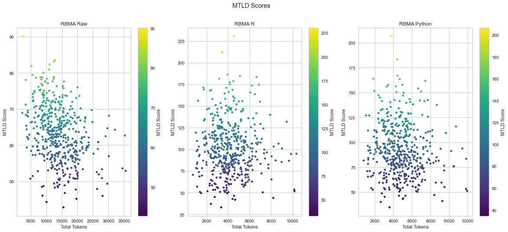
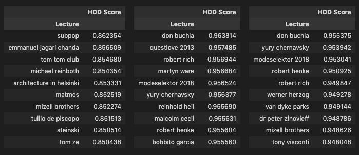

Chapter 4 Exploratory Analysis in Python
Following the cleaning process I worked on some exploratory analysis, using a mix of quantitative and qualitative approaches, to ensure that the data held up to various basic descriptions so that I could confidently move forward with topic modeling.
For this I focused on the three corpus versions mentioned previously: the raw corpus, corpus lemmatized with R, and corpus lemmatized with Python. As with the cleaning process, the various analysis presented in this and the next notebook were refined through an iterative process and I’ve tried to keep the R and Python versions different, playing to each program’s strength rather than trying to replicate everything across both as I had done with the corpus cleaning.
In Python, I transferred the ntlk corpus objects to pandas8, creating dataframes for each corpus version that contained various elements I would need for analysis and topic modeling. I then pickled them so they could be easily reused. These dataframes include raw transcript, tokens, POS, lexical diversity scores, and total types and tokens counts.
As with the previous notebook, I use plain code and image versions of Python outputs and only include code chunks where necessary.
library(reticulate)#import libraries
import pandas as pdimport nltk
from nltk.corpus import PlaintextCorpusReader
import re
import matplotlib.pyplot as plt
from wordcloud import WordCloud
from IPython.display import display, display_html, HTML
from nltk.probability import FreqDist
from itertools import chain
from yellowbrick.text.postag import postag
from lexical_diversity import lex_div as ld
from sklearn.feature_extraction.text import CountVectorizer
from yellowbrick.text import FreqDistVisualizer#Set corpora roots
rbma_corpus = PlaintextCorpusReader('/Users/laurentfintoni/Desktop/University/COURSE DOCS/YEAR 1/Q3/DIGITAL TEXT/PROJECT/rbma-lectures-master/data_no_empty_files_new_file_names_no_intro', '.*\.txt')
rbma_corpus_clean_lemm_v2 = PlaintextCorpusReader('/Users/laurentfintoni/Desktop/University/COURSE DOCS/YEAR 1/Q3/DIGITAL TEXT/PROJECT/RBMA_CLEAN_R_LEMM_V2', '.*\.txt')
rbma_corpus_py_clean_lemm_v2 = PlaintextCorpusReader('/Users/laurentfintoni/Desktop/University/COURSE DOCS/YEAR 1/Q3/DIGITAL TEXT/PROJECT/RBMA_CLEAN_PY_LEMM_V2_POS', '.*\.txt')
#make a list of the corpora and give them pretty titles
rbma_corpus_list = [rbma_corpus, rbma_corpus_clean_lemm_v2, rbma_corpus_py_clean_lemm_v2]
title_list = ['RBMA Raw', 'RBMA R V2 LEMM', 'RBMA PY V2 LEMM']
#create dataframes of each corpus and pickle for reuse later
def corpus_to_df(input_corpus, title):
lecture_name = [re.sub('-|.txt', ' ', d) for d in input_corpus.fileids()]
transcript = [input_corpus.raw(d) for d in input_corpus.fileids()]
tokens = [input_corpus.words(d) for d in input_corpus.fileids()]
total_tokens = [len(input_corpus.words(d)) for d in input_corpus.fileids()]
types = [len(set(input_corpus.words(d))) for d in input_corpus.fileids()]
pos = [nltk.pos_tag(input_corpus.words(d)) for d in input_corpus.fileids()]
mtld = [ld.mtld(input_corpus.words(d)) for d in input_corpus.fileids()]
hdd = [ld.hdd(input_corpus.words(d)) for d in input_corpus.fileids()]
corpus_df = pd.DataFrame({'Lecture': lecture_name, 'Transcript': transcript, 'Tokens': tokens, 'Total Tokens': total_tokens, 'Total Types': types, 'POS': pos, 'HDD Score': hdd, 'MTLD Score': mtld}).set_index('Lecture')
corpus_df.to_pickle(f'./PICKLES/{title}.pkl')
return 'Process complete!'#create list of variables for pickled dfs
rbma_raw_pickle = '/Users/laurentfintoni/Desktop/University/COURSE DOCS/YEAR 1/Q3/DIGITAL TEXT/PROJECT/PICKLES/RBMA Raw.pkl'
rbma_raw_df = pd.read_pickle(rbma_raw_pickle)
rbma_corpus_clean_lemm_v2_pickle = '/Users/laurentfintoni/Desktop/University/COURSE DOCS/YEAR 1/Q3/DIGITAL TEXT/PROJECT/PICKLES/RBMA R V2 LEMM.pkl'
rbma_R_df = pd.read_pickle(rbma_corpus_clean_lemm_v2_pickle)
rbma_corpus_py_clean_lemm_v2_pickle = '/Users/laurentfintoni/Desktop/University/COURSE DOCS/YEAR 1/Q3/DIGITAL TEXT/PROJECT/PICKLES/RBMA PY V2 LEMM.pkl'
rbma_python_df = pd.read_pickle(rbma_corpus_py_clean_lemm_v2_pickle)
rbma_pickle_list = [rbma_raw_df, rbma_R_df, rbma_python_df]
rbma_pickles_titles = ['RBMA Raw', 'RBMA R', 'RBMA Python']4.1 POS Visualisation
I used the PosTagVisualizer from the Yellowbrick library to create bar charts that show the proportions of different parts of speech in a corpus.
This visualisation is most meaningful in showing how the cleaning process impacted the corpus: the Python version has more verbs and modals, likely because the R version went through additional steps that removed modals that appeared in the top words, and both clean versions are composed primarily of nouns, verbs, adjectives, and adverbs. Oddly the adjective count increased slightly between each version (from 384378 in the raw corpus to 419007 and 433524 in the cleaned versions), which I assume might be due to some sort of misinterpretation in the POS tagging process.
raw_list = [rbma_raw_df['POS'].tolist()]
r_list = [rbma_R_df['POS'].tolist()]
py_list = [rbma_python_df['POS'].tolist()]
fig, (ax1,ax2, ax3) = plt.subplots(1,3, figsize=(20,8))
fig.suptitle('POS Plots')
postag(raw_list, ax=ax1, show=False)
postag(r_list, ax=ax2, show=False)
postag(py_list, ax=ax3, show=False)
display_html(fig)4.2 Lexical diversity
Next I looked at the lexical diversity of corpus items, which is the measure of how many different words appear in a text. The corpus is best summarized as being made up of conversations about music history and practices, which can include some complex and abstract ideas (such as inspiration or technical practices). There is a small proportion of lectures by non-native English speakers, some of which are conducted in English and others in their native language via translators (I’d say between 10 and 15% at a quick glance). And the majority of conversations are around 60 to 90 minutes long (which affects the length of the transcript). Considering all this, I thought it might be interesting to see if some basic lexical diversity analysis confirmed some of these aspects of the corpus and if it hinted at anything else.
I first used the basic Token-Type Ratio approach, which calculates the diversity of a text by dividing total unique words (types) by the total amount of works (tokens). However this approach is highly susceptible to length: the longer the document, the lower the chance that a new token will also be a new type, causing the TTR score to drop. As such, looking at TTR scores for the raw corpus we see the shortest texts with the highest scores and the longest one with the lowest scores. For reference the shortest text in the raw corpus has 2679 tokens, while the longest has 35551 tokens.
To remedy this I used the lexical-diversity library in Python9, which allows for easy implementation of various other lexical diversity calculations including Hypergeometric Distribution D (HDD)10 and Measure of Lexical Textual Diversity (MTLD)11, both of which account for the limitations of TTR in different ways: MTLD computes how many words it takes before the TTR falls below a given threshold while HDD uses probability to evaluate the contribution of each word in the text to overall lexical diversity.
I started by looking at the median values for tokens and types and the means for the different lexical diversity calculations across all three version of the corpus.
#create DFs for all score types and assign variables to them
#TTR scores
raw_ttr = rbma_raw_df['Total Types'] / rbma_raw_df['Total Tokens'] * 100
raw_ttr = raw_ttr.sort_values(ascending=False)
raw_ttr = raw_ttr.to_frame('TTR Score')
r_ttr = rbma_R_df['Total Types'] / rbma_R_df['Total Tokens'] * 100
r_ttr = r_ttr.sort_values(ascending=False)
r_ttr = r_ttr.to_frame('TTR Score')
py_ttr = rbma_python_df['Total Types'] / rbma_python_df['Total Tokens'] * 100
py_ttr = py_ttr.sort_values(ascending=False)
py_ttr = py_ttr.to_frame('TTR Score')
ttr_scores = [raw_ttr, r_ttr, py_ttr]
#HDD scores
raw_hdd = rbma_raw_df['HDD Score'].sort_values(ascending=False)
raw_hdd = raw_hdd.to_frame()
r_hdd = rbma_R_df['HDD Score'].sort_values(ascending=False)
r_hdd = r_hdd.to_frame()
py_hdd = rbma_python_df['HDD Score'].sort_values(ascending=False)
py_hdd = py_hdd.to_frame()
hdd_scores = [raw_hdd, r_hdd, py_hdd]
#MTLD scores
raw_mtld = rbma_raw_df['MTLD Score'].sort_values(ascending=False)
raw_mtld = raw_mtld.to_frame()
r_mtld = rbma_R_df['MTLD Score'].sort_values(ascending=False)
r_mtld = r_mtld.to_frame()
py_mtld = rbma_python_df['MTLD Score'].sort_values(ascending=False)
py_mtld = py_mtld.to_frame()
mtld_scores = [raw_mtld, r_mtld, py_mtld]lex_div_averages = '/Users/laurentfintoni/Desktop/University/COURSE DOCS/YEAR 1/Q3/DIGITAL TEXT/PROJECT/PICKLES/lex_div_averages.pkl'
lex_div_averages = pd.read_pickle(lex_div_averages)
lex_div_averages## Tokens Median Types Median TTR Mean HDD Mean MTLD Mean
## Corpus
## RBMA Raw 13365.5 1682.5 13.148197 0.830545 63.217668
## RBMA R 4009.5 1114.0 28.540437 0.931667 101.318943
## RBMA Python 4621.5 1151.0 25.687417 0.920383 92.314370As we can see, the proportion of unique words to total words jumps from around 12% in the raw corpus to 25% in the cleaned versions, and in turn the various calculation scores increase.
Next I looked at each different calculation method via scatter plot, to ensure that the data was evenly distributed.
#create a figure and assign scatters for TTR score to it (repeat plot section with HDD and MTLD scores)
raw_ttr['Total Tokens'] = rbma_raw_df['Total Tokens']
r_ttr['Total Tokens'] = rbma_R_df['Total Tokens']
py_ttr['Total Tokens'] = rbma_python_df['Total Tokens']
fig, (ax1,ax2, ax3) = plt.subplots(1,3, figsize=(20,8))
fig.suptitle('TTR Scores')
raw_ttr.plot.scatter(x='Total Tokens', y='TTR Score', c='TTR Score', colormap='viridis', ax=ax1, title='RBMA Raw')
r_ttr.plot.scatter(x='Total Tokens', y='TTR Score', c='TTR Score', colormap='viridis', ax=ax2, title='RBMA R')
py_ttr.plot.scatter(x='Total Tokens', y='TTR Score', c='TTR Score', colormap='viridis', ax=ax3, title='RBMA Python')
display_html(fig)
These plots show a normal distribution, with the odd outlier at the top and bottom which are also reflected in the top / bottom 10 entries I looked at next. Most importantly the majority of texts in each version of the corpus fall within a range that matches the means and which appears to reflect low to moderate levels of lexical diversity overall. We can also see how the cleaning process affects the plots, with the cleaned versions being more spread out.
As a last step I looked at the top 10 and bottom 10 texts for each lexical diversity calculation.
combined_list_ttr = [raw_ttr, r_ttr, py_ttr]
combined_list_hdd = [raw_hdd, r_hdd, py_hdd]
combined_list_mtld = [raw_mtld, r_mtld, py_mtld]
#Display top 10 side by side, one row for each calculation, one column for each corpus - raw, R, Python (swap head for tail to display bottom 10)
output = ""
for df in combined_list_ttr:
output += df.head(10).style.set_table_attributes("style='display:inline'")._repr_html_()
output += "\xa0\xa0\xa0"
display(HTML(output))
output = ""
for df in combined_list_hdd:
output += df.head(10).style.set_table_attributes("style='display:inline'")._repr_html_()
output += "\xa0\xa0\xa0"
display(HTML(output))
output = ""
for df in combined_list_mtld:
output += df.head(10).style.set_table_attributes("style='display:inline'")._repr_html_()
output += "\xa0\xa0\xa0"
display(HTML(output))
I found some interesting observations in these results:
A handful of lectures conducted in native languages have high scores in the cleaned versions such as Kitshkrieg (German), Tullio de Piscopo (Italian), Yury Chernavsky (Russian), Wolfgang Voigt (German), Modeselektor (German), Peder Mannerfelt (Swedish) and Xavier Veilhan (French). My assumption is that these high scores are likely due to the transcripts being translations which created a higher quality of text. In the case of Voigt and Modeselektor, they also have lectures in the corpus held a decade or so before that were in English, and not their native German. Looking at the MTLD scores for these we see some sizeable differences, the translated transcripts score almost double, while differences in HDD scores are much less pronounced which is likely a reflection of how HDD is computed as HDD scores are overall in a tighter range than the other two as we can see from the scatter plots. The differences between English and German lectures for Voigt and Modeselektor lead me to assume that translations have a likely impact on lexical diversity.
The other side of the above observation can be seen in lectures conducted in a mix of English and a native language or in English by non-native, non-fluent speakers, which show up in the bottom ranks. These include Yuzo Koshiro and Toshio Matsuura (conducted in Japanese with both host and translator), Damo Suzuki (Japanese native speaking English), Orchestra di Santa Cecilia (conducted in Italian and English by the lecturers), Arthur Verocai (conducted in a mix of broken English and Brazilian), and Bappi Lahiri (Indian native speaking English).
Another interesting observation is the presence of lecturers from the world of hip-hop in the bottom 10 lists for HDD and MTLD scores, including A$AP Rocky, No ID, Mike Will Made-It, Frank Rodriguez, DJ Dahi, Oh No, and Ka. My assumption here is that there might be a difference in the range of vocabulary (unique types) used in these lectures which creates an adverse impact on the score similar to what happens with the lectures conducted in broken English/native languages. Other factors also include length, the Oh No lecture is one of the shortest in the corpus and thus might be more susceptible to the HDD and MTLD methodologies which try to correct for length, and context, the DJ Dahi lecture took place in Seoul and was partly translated into Korean by the host resulting in much shorter answers by the artist. Furthermore I know from experience that the Ka and No ID lectures, for example, are similar in terms of topics and ideas expressed as some of the lectures in the top 10 and so I suspect that the tendency of some of these artists to express themselves with a more limited vocabulary might be a key factor here and certainly something that would be interesting to look into further.
The TTR scores confirm the known issue with the calculation. The shortest lectures appear up top (Reinboth, Madlib, Strobocop) while the longest are in the bottom (Bob Power, Marley Marl, Jam & Lewis, Teddy Riley). In the case of Strobocop for example, which is one of the shortest lectures and conducted by a non-native English speaker in English, we see it in the top 10 in all three versions for TTR but in the bottom 10 for the HDD version of the R corpus, highlighting how that particular calculation method compensates for the limitations of TTR.
Overall I would say that it seems to me as if HDD scoring might be most accurate in capturing the various nuances of this particular corpus and that further, more detailed lexical diversity analysis of the corpus could be interesting to see just how artists modulate their speech in public conversations.
4.3 Most Common Words
Lastly I looked at the most common words in the corpus. I used the Frequency Distribution method built into nltk to generate lists alongside Yellowbrick’s FreqDist vizualizer and word clouds for additional visualization options.12
#return top 15 most common words in corpus and their frequency
def most_common_words(input_corpus):
mcw_corpus = []
for d in input_corpus.fileids():
fdist = FreqDist(input_corpus.words(d))
mcw_corpus.append(fdist.most_common())
final_list = [x for x in chain.from_iterable(mcw_corpus)]
commondf = pd.DataFrame.from_records(final_list, columns=['Word', 'Frequency'])
grouped = commondf.groupby('Word', sort=True).sum()
grouped = grouped.sort_values(by=['Frequency'], ascending=False)
return grouped[0:15]
#process all corpora to return top 15 most common words and frequencies
def display_side_by_side(dfs:list, captions:list):
output = ""
combined = dict(zip(captions, dfs))
for caption, df in combined.items():
output += df.style.set_table_attributes("style='display:inline'").set_caption(caption)._repr_html_()
output += "\xa0\xa0\xa0"
display(HTML(output))
display_side_by_side([most_common_words(c) for c in rbma_corpus_list], [t for t in title_list])
Unsurprisingly, the raw corpus doesn’t tell us anything meaningful however the cleaned versions offer some insights.
Combined together “music,” “think,” “know,” “record,” “make,” and “people” offer a simple summary of the central theme of the corpus, which is also a summary of what the Red Bull Music Academy as a project represented: the bringing together of people through music in order to learn, create, and celebrate. While raw frequency doesn’t equate relevance, music is the central idea of this corpus and as such I’d expect to see it in the top three most frequent terms. The verbs “think” and “know” reflect the kind of theorising I’d expect to see in a corpus of educational lectures about music, while “record” and “sound” reflect more physical aspects.
Barcharts for the top 50 terms and wordclouds below further confirm these insights.
#vectorize the corpus DFs and display barcharts of Frequency Distribution, top 50 words for R version (same for Python but call the other DF)
vectorizer = CountVectorizer()
docs = vectorizer.fit_transform(rbma_R_df.Transcript)
features = vectorizer.get_feature_names()
visualizer = FreqDistVisualizer(features=features, orient='h', size=(1440, 900), title='Frequency Distribution of Top 50 tokens in R Corpus')
visualizer.fit(docs)
display_html(visualizer.show())#display wordcloud of corpus
rbma_corpus_list = [rbma_corpus_clean_lemm_v2, rbma_corpus_py_clean_lemm_v2]
title_list = ['RBMA R Corpus', 'RBMA Python Corpus']
def corpus_to_wordcloud(corpus_list):
plt.figure(figsize=(20,8))
for i, c in enumerate(corpus_list):
text = " ".join(t for t in c.words())
wordcloud = WordCloud(background_color="white").generate(text)
plt.subplot(1, 2, i+1)
plt.plot()
plt.imshow(wordcloud, interpolation='bilinear')
plt.axis("off")
plt.title(title_list[i])
plt.show()
display_html(corpus_to_wordcloud(rbma_corpus_list))